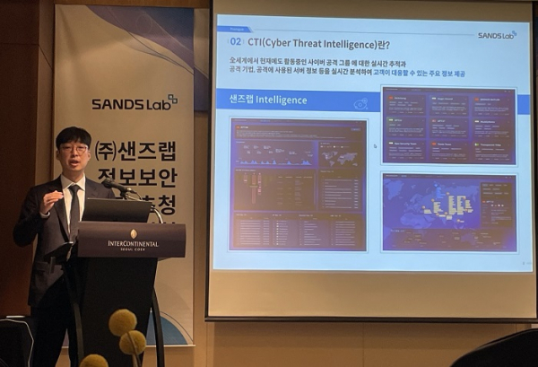

1. 화이트 해커화이트 해커는 윤리적인 목적을 가진 해커로, 모의 해킹이나 시스템의 취약점을 찾아내고 이를 보완해주는 보안 전문가입니다. 공격자가 악용하기 전에 보안 허점을 미리 점검하는 역할을 합니다. 기업, 정부기관, 보안 회사 등에서 활동하며 보안 컨설팅, 침투 테스트 등을 수행합니다. |
2. 보안 분석가보안 분석가는 로그와 네트워크 트래픽을 분석하여 침해 징후를 식별하고 대응합니다. 이상 행동이나 위협을 탐지해 기업 자산을 보호하는 핵심 역할을 맡고 있습니다. SIEM 도구 등을 활용해 실시간 위협 탐지와 분석, 대응 전략 수립까지 수행합니다. 또한 컴퓨터 시스템과 네트워크를 사이버 위협으로부터 보호하는 컴퓨터 전문가입니다. |
3. 보안 엔지니어보안 엔지니어는 방화벽, 침입 탐지 시스템, VPN 등 다양한 보안 인프라를 설계하고 구축하는 전문가입니다. 시스템의 전반적인 보안 구조를 관리하고 유지합니다. 주로 대기업의 IT팀이나 보안 솔루션 업체에서 활동하며, 보안 정책 수립에도 관여합니다. |
|  |
4. 사이버 위협 인텔리전스(CTI) 전문가CTI 전문가는 해커 그룹, 공격 트렌드, 취약점 등을 분석하여 공격을 사전에 예측하고 차단하는 정보를 제공합니다. 위협 데이터를 수집, 분석하여 조직의 보안 전략을 강화합니다. 국가 차원의 사이버보안센터나 글로벌 보안 기업에서 많이 활동합니다. |
5. 보안 정책 및 컴플라이언스 전문가정보보호 관련 법률과 정책을 준수하도록 관리하는 직업입니다. 기업이 법적 요구사항에 맞춰 개인정보보호, 정보보안체계를 유지하도록 가이드하고 점검합니다. 문서 작성, 내부 감사, 규제 대응 등을 담당하며, 보안의 행정적·관리적 측면을 책임집니다. |